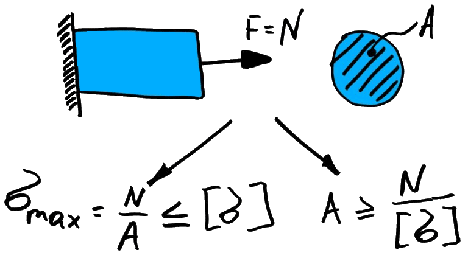

Stretch

Исходные данные
Диаметр стержня, mm
Диаметр отверстия, mm
Усилие растяжения,
N
кг
Результаты расчета
0.000
Площадь сечения стержня,
mm
cm
2
0.000
Напряжение в стержне, MPa (N/mm
2
)
Pol Banky © 2018

 Stretch
Stretch